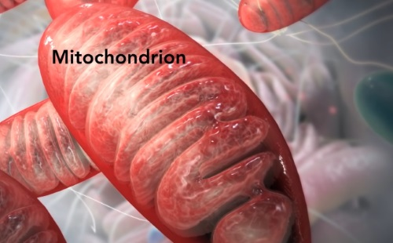
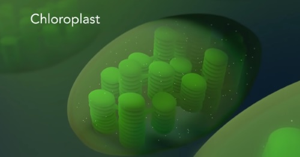
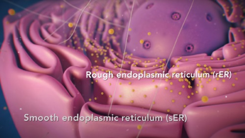

全生物の共通性
-
全生物は、[a]細胞でできている。
[a]が1つで構成される単細胞生物と、[a]が複数個で構成される多細胞生物がある。
-
全生物は、生きる上でエネルギーが必要であり、エネルギーの受け渡しは、アデノシン三リン酸(ATP)という分子を介して行われる。
-
親から子へと受け継ぐ遺伝情報によって、体を構成する。 遺伝情報は、DNAと呼ばれる分子が持っている。
細胞の中
細胞の主な構造はどの生物でも同じである。
「核」という構造を持つ細胞を[a]真核細胞といい、それらで構成される生物を、真核生物という。
「核」という構造を持たない細胞を[b]原核細胞といい、それらで構成される生物を、原核生物という。
[a]は葉緑体やミトコンドリアなどの細胞小器官が入っている。
[b]には入っていないけど、リボソームはある。
核
「核」は真核細胞のみが持っている。
-
- [A]核膜
-
- 核の最外層にある。 核内外の物質の出入りを調整する役割を担う。
- 二重膜である。
- この中は透明な核液というもので満たされている。
- 核膜孔と呼ばれる小さな穴をたくさん持つ。
-
- [B]染色体
-
- DNAとヒストンと呼ばれるタンパク質からなるもの。
- 本体であるDNAは、細胞や個体の形、性質を決めて、その特徴を子などに継承する役割を担う。
- 分裂期は、凝縮して太いひも状になるが、そうでない時は核の全体に分散している。
- 酢酸カーミンや 酢酸オルセインで染色できる。
-
- [C]核小体
-
- 核内に1~数個ある
- RNAとタンパク質からなるもの。
- リボソームを生成し、生成されたそれらは核内を出て、細胞質をただよったり、粗面小胞体に付着したりする。
核外
-
- [D]細胞膜
-
- 細胞を包む一重膜。
- 細胞内外を仕切り、物質の出入りを取り仕切る。また細胞外の刺激や情報を細胞内に伝える仕事を担う
-
タンパク質と[1]リン脂質と呼ばれる脂質からなる。
[1]には親水性部分と疎水性部分があり、これらが疎水性部分同士を内側に向けて2重に並んでいる。→ 細胞外の水環境と独立している&イオンも通さない→ 物質のやり取りができない→ イオンチャネルと呼ばれる、特定のイオンだけを通過させるタンパク質が必要。
-
- [E]ミトコンドリア
-

- 細胞の呼吸の仕事をする。
- 外膜と内膜から構成される二重膜構造
-
二重膜の内側の膜は、ひだ状に入り組んだ構造をしている。
このしわしわな構造のうち、突起部分をクリステという。
ひだ状に入り組んだほうが、呼吸効率が上がる。(表面積) - 内側の膜で囲まれた部分をマトリックスという。
- 独自のDNAを持つ。
- 酸素を利用して有機物を分解して、生命活動に必要なエネルギーを生成し、ATPに保存する。
-
- [F]葉緑体
-

- 細胞の光合成の仕事をする。 植物のみにある
- 内部には、[1]チラコイドという、平べったく、扁平状な袋状の構造であるものがあり、それが持つ、光合成色素で吸収した光エネルギーを用いて有機物を生成する。
- [1]が密になった部分を[2]グラナという。
- [1]や[2]ではない、残った空間をストロマという。 (正しくは、[1]や[2]を支える透明な基質という表現が正しい)
- 独自のDNAを持つ。
-
- [G]中心体
-
- 鞭毛や繊毛の形成にかかわる。
- 筒状の中心粒(中心小体)が2つ直角に配置される。
- 核膜近くに配置
- 基本動物細胞のみが持つ(植物も持つことも)
-
- [H]小胞体
-

- 一重膜の扁平な袋状の構造。 細胞質を網目状に連絡している。
- 核膜の外膜とつながっていることもある。
- 「粗面小胞体」は、リボソームが付着していて、タンパク質の輸送の役割をする。
- 「滑面小胞体」は、脂質の合成や、カルシウムイオンの濃度調整、輸送の役割をする。
-
- [I]リボソーム
-
- タンパク質を合成する
- 核小体で形成されて、核を出て、一部は細胞質をただよい、一部は粗面小胞体に付着する。
-
- [J]リソソーム
-
- 細胞内で様々な物質の分解を行う小器官。 いわゆる細胞内消化の場。
- 一重膜で球状
- 内部に「加水分解酵素」を含む。
-
- [K]ゴルジ体
-

- 細胞内で作られた物質を濃縮、化学的修飾(いろいろ原子をくっつけること)し、膜で包んで細胞外へ分泌する。
- 一重膜の扁平な構造が層状になった構造。
-
- [L]細胞質基質
-
- 液状成分からなり、細胞小器官の間を埋める。
- 様々な酵素を含む。
- 多くの代謝の場
- 細い繊維状で、細胞の形を保つ働きを持つ、細胞骨格が、この中に存在する。
-
- [M]液胞
-
- 植物や酵母などの真核細胞内にある。
- 成熟した植物細胞では細胞体積の90%以上を占める。
- 糖類、有機酸、無機塩類、アントシアニン色素などを貯蔵する。
-
- [N]細胞壁
- 細胞膜の外側にあり、細胞の保護と形の維持をする。
- 植物細胞と、原核細胞が持つ。 ただし、植物細胞のそれと、原核細胞のそれの構成物質は異なる。
- 有機物の、セルロースやペクチンが主成分である。
-
- 原形質連絡
- 植物細胞の細胞壁にある小さな通路。 隣人さんとの間をつなぎ、物質や、情報のやり取りをする。
ミトコンドリアと葉緑体の由来
-
- [A]細胞内共生説
-
原核細胞の中に、いろいろな原核細胞が取り込まれてそれらがミトコンドリアや葉緑体になったという説。
その説によると、
まず、原核生物が真核細胞に進化する過程で、好気性の細菌が共生してミトコンドリアになり、
シアノバクテリアが共生して、葉緑体になった。根拠は、ミトコンドリアと葉緑体がそれぞれ細胞核と異なる独自のDNAを持つことと、それぞれが分裂によって増殖すること、2重の膜におおわれていることなどがあげられる。